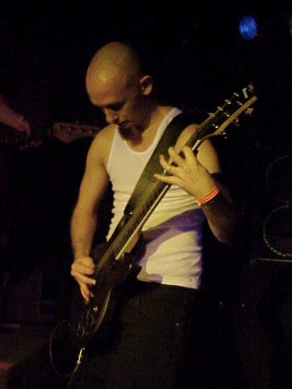

Friday Interview #10: Devin Anderson
Hi, and welcome to the 10th edition of the Friday Interview! This week, we're joined by a programmer and musician, author of Synthclone and other contributions to the Linux audio landscape. I'm very happy to introduce the 10th participant of the series, interviewee #10: Devin Anderson! Lets get started!
Introducing Devin Anderson
Hi Devin! Thanks for doing this interview! What's your real name, and where do you live?
Thanks for having me, Gabbe.
I live in Los Angeles. I work for Akamai (http://www.akamai.com/). I'm a software engineer in Akamai's Protocol Optimization department.
What's your musical background like? What music do you like, and do you play any instruments?
I first became interested in music when I was 4-5 years old. I remember sitting outside my older sister's (closed) door, listening to the records she played, and to KNAC FM, which now has a sort-of cult status among heshers and their ilk. She listened to a lot of metal and punk rock, and I developed a certain fondness for it too.
When I was 15, I started learning to play guitar. I had this awful acoustic guitar with really horrible action. I would play for hours each day until my fingertips were raw, learning any song I could either learn by ear or via tablature. I loved every minute of it.
It was also around this time that I first came upon MARS FM, a radio station that would eventually completely change how I thought about music. MARS FM played all sorts of music that I was totally unaware of up to that point. It was MARS FM that first exposed me to Joy Division, Nitzer Ebb, Bauhaus, My Life with the Thrill Kill Kult, Lords of Acid, Front 242, etc. Unfortunately, I wasn't in a place in my life where I could fully appreciate what I was hearing.
A little later, I bought my first electric guitar, and started jamming with my friend Jason, who played drums. We decided to form a band with some of our schoolmates, which we called "Full Frontal Nudity". We played so-called "alternative music". We played live shows at coffeehouses, and at a few clubs around the San Fernando Valley. I enjoyed playing live, but wanted to write music with more intensity.
One day, on the way to a gig, a friend of mine (another Jason, who's made quite a name for himself as DJ Bractune, a member of a fantastic band called Whiteqube, and the founder of Bractune Records) inserted a disc into the CD player, and "Last" by Nine Inch Nails came out of the speakers. I was amazed at the intensity, and how electronic elements could be blended with harsh, distorted electric guitars to create amazing soundscapes. In addition to developing an immediate love for NIN, I also had a new appreciation for the stuff I'd listened to on MARS FM; unfortunately, when I went back to listen to MARS FM, I found that the station no longer existed.
NIN turned out to be a gateway band. KMFDM, Ministry, and Front Line Assembly followed closely behind ... and then I found Skinny Puppy. That was magical. By the time I turned 21, I was listening to industrial music almost exclusively.
In my mid-twenties, I started to try to write electronic music. I bought a Roland MC-909, which ultimately ended up being an expensive mistake. I did learn a lot about basic electronic music concepts - filters, LFOs, envelopes, etc. - but the lack of real synthesis in the MC-909 ended up leaving me frustrated and wanting.
I bought my first real synthesizer - a used Waldorf Blofeld desktop - when I was in my early 30s. I learned a lot about synthesis from the Blofeld. I also learned a lot about what I want in a synth. Since then, I've also acquired an Elektron Machinedrum and an Elektron Monomachine.
These days, I find myself listening to EBM, industrial music, and 80s post-punk. I don't play guitar (or write music) quite as much as I'd like, but I hope to change that in the near future.
What's your history with Linux, and with using Linux for audio?
I learned about Linux back in 1998, right around the time when I made a decision to focus on computer science. I bought a copy of Red Hat Linux 5.2, and installed it on my PC. Nothing worked out of the box. I had to configure all of my hardware manually. Getting from a keyboard and a command prompt to a working GUI (old Enlightenment!) desktop was a fantastic (albeit frustrating) learning experience. Since that time, I've been using Linux exclusively on the computers I own.
Around 2004, I installed Fedora Core and Planet CCRMA on my desktop. Again, nothing worked! It didn't help that I didn't quite understand JACK and the applications that used JACK, but I pushed forward anyway. I eventually gave up, as I started to focus on dealing with other issues in my life.
Around 2008, I installed 64 Studio. The situation had improved drastically. I started recording stuff I had written using my Roland MC-909. Around this time, I became frustrated with my MC-909 and wanted to sell it. However, there were some patches that I wanted to keep from the MC-909. I envisioned a tool that could capture audio data from the MC-909, and save the data as a sample library. That's how the first version of `synthclone` came to be.
Since then, I've tried many different audio distributions. I used AVLinux for quite a long time (Glen does a fantastic job), but eventually settled on Lubuntu, tweaked for realtime use.
Synthclone and other projects
You've done work on a couple of different Linux audio related applications and projects. Could you talk a bit about what kind of applications and projects you've built yourself, as well as helped out with? An introduction to your work, if you will.
Sure. There are two projects for which I'm the sole code contributor; `synthclone` and `midisnoop`.
`synthclone` is a sample-based instrument generator. The most common workflow involves four steps:
- If you intend to acquire samples via sampling another instrument, then you'll need to create zones for the samples you'd like to acquire. There's a zone generator plugin that simplifies this process.
- Acquire the samples, either by sampling the sounds of another instrument (via JACK or PortAudio/PortMIDI), or by loading the samples from your filesystem.
- Apply various effects to the samples. Effects include compressors, limiters, choruses, delays, etc. via the LV2 plugin, and effects that are specific to cleaning up samples (faders, reversers, and trimmers).
- Save the samples as a sample-based instrument. Supported formats currently include Hydrogen drumkits, Renoise instruments, and SFZ instruments.
`midisnoop` is a simple MIDI monitor, with the added benefit that you can create your own MIDI messages to send to a device with the purpose of seeing what the device does in response. It's useful for tinkerers, and developers that want to write code that interfaces with instruments via MIDI. I wrote `midisnoop` so that I could figure out what MIDI messages I would need to send to my various synths in order to save and restore patches, which allowed me to write Lua plugins in Renoise to automate the saving of patches from my hardware synths. At some point, I'll likely open source those plugins too.
I've also contributed quite a bit of code to JACK 2 with the intention of improving latency and jitter in JACK 2 MIDI drivers, including the `alsarawmidi` driver, which, IIUC, is going to be ported back to JACK 1 by Paul Davis.
I've made a few other minor contributions to a handful of Linux Audio projects, but nothing noteworthy.

What's in store for the future of Synthclone?
I'm not currently motivated to work on `synthclone`, so I can't say when changes will occur, but I do have several things in mind:
- Name change: The name `synthclone` indicates that the primary use of the application is to clone synthesizers, which was true when `synthclone` was created, but isn't true anymore. `synthclone` has evolved into a more general sample-based instrument creator.
- Qt 5 support: At some point, distributions will stop including Qt 4 in their distributions.
- Sample library import functionality: Support already exists for importing samples from Hydrogen kits, and I'd like to add the functionality to import samples from Renoise instruments and SFZ instruments.
- Effect buses: Right now, there's just one effects bus that is used for all samples. You *can* apply different effects and effect parameters to different samples, but it's currently a very tedious process. Multiple effect buses would solve this problem.
- More target formats: There are many target formats that aren't supported, including Kontakt, Gigasampler, Akai, and others.
- Mac OSX support: I've already done some work on this front, but I'm not finished.
- Developer involvement: I'd really like to attract more developers to work on `synthclone`. I created a plugin API, hoping that it would provide developers with an easy way to add functionality to `synthclone`, but I haven't been able to generate much interest in doing so yet. Having other developers to add their own ideas in the form of plugins would be awesome.
How can non-coders contribute to your projects?
- Documentation: I'm not motivated to write documentation (for now). Documentation would be extremely helpful.
- Tutorials: Glen MacArthur created an awesome video tutorial for `synthclone` (http://vimeo.com/73053302). Having more tutorials showing different workflows and use cases for `midisnoop` and `synthclone` would be awesome.
- Translations: The only language I speak fluently is English. Adding translations for more languages would make it easier for people that don't speak English fluently to start using `midisnoop` and `synthclone`.
- Instruments: Create instruments with `synthclone`, make the results public, and mention that you used `synthclone` to create the instruments.
- UX/UI Suggestions: I'm a developer, and I know that I build applications in such a way that I can understand them easily. Often, that means that users may not have the best experience, or that the UI may be lacking in some serious way that I'm not aware of. If you think something can be improved, let me know.
- Donations: If you have some spare change that's burning holes in your pockets, then donate to my projects using Flattr (http://flattr.com/profile/surfacepatterns).
Is there any other project you have your sights set on, or that you'd eventually want to get around to doing?
There are *lots* of projects I'd like to get around to; unfortunately, my time is limited, and if I spend all my time writing code, I'll never create any music! That being said, here are some ideas I have rolling around in my head:
- Asynchronous library for realtime: I love boost::asio, and have created a library with a similar API to boost::asio with the purpose of dispatching the execution of functions from a realtime thread to non-realtime threads, and vice versa. It still needs some testing before release, but I've found it to work well thus far.
- Disk-streaming library: I'd like to create a disk-streaming library that covers the greater majority of disk-streaming use cases so that other applications can take advantage of disk streaming without worrying about the implementation details.
- Visual modular plugin creation system: There are certainly modular plugin systems available (Ingen, CLAM Network Editor), applications that allow you to visually put together components (PureData), and programming languages for creating plugins (faust), but there's nothing quite as friendly and complete as FlowStone (http://www.dsprobotics.com/flowstone.html). If FlowStone came out for Linux today, I would buy it immediately. I don't know if I'll ever have the time to work on something like this.
- Sync external hardware with sessions: I'd like to be able to save/restore patches from/to my external hardware when I save/load sessions. I've written Renoise plugins to do this, but a more general system that interfaces with different sessions management frameworks would benefit other users.
- System/library for creating software editors for external hardware: There are some applications out there that try to make it easier to write software editors, but the ones I've seen are sub-par.
Final questions
Could you talk a little about what kind of hardware setup you are using? Sure. My computer contains the following components (information from my NewEgg receipts):
- 2 x Western Digital WD Blue WD5000AAKX 500GB 7200 RPM 16MB Cache SATA 6.0Gb/s 3.5" Internal Hard Drive Bare Drive - OEM
- 2 x Acer S231HLbid Black 23" 5ms HDMI LED-Backlight LCD monitor Slim Design
- Antec Performance One Series P183 V3 Black Aluminum / Steel / Plastic ATX Mid Tower Computer Case
- Intel Core i7-3770 Ivy Bridge 3.4GHz (3.9GHz Turbo) LGA 1155 77W Quad-Core Desktop Processor Intel HD Graphics 4000
- ASUS DRW-24B1ST/BLK/B/AS Black SATA 24X DVD Burner - Bulk - OEM
- Logitech MK100 Black PS/2 Wired Slim Classic Desktop
- ASRock P67 EXTREME4 GEN3 LGA 1155 Intel P67 SATA 6Gb/s USB 3.0 ATX Intel Motherboard
- Mushkin Enhanced Blackline 8GB (2 x 4GB) 240-Pin DDR3 SDRAM DDR3 1600 (PC3 12800) Desktop Memory Model 997043
- SeaSonic X Series X650 Gold ((SS-650KM Active PFC F3)) 650W ATX12V V2.3/EPS 12V V2.91 SLI Ready CrossFire Ready
- SAPPHIRE FleX 100322FLEX Radeon HD 6450 1GB 64-bit DDR3 PCI Express 2.1 x16 HDCP Ready Low Profile Ready Video Card
- TP-LINK TL-WN722N Wireless N150 High Gain USB Adapter, 150Mbps, w/4 dBi High Gain Detachable Antenna, IEEE 802.11b/g/n
The machine is quiet, and fast.
For audio, I use two Echo Layla 3G sound cards. Theoretically, that gives me 32 input channels and 32 output channels, but I haven't bought an A/D converter, so I only use 16 input channels. I intend to buy an Access Virus TI 2 desktop (unless something cheaper becomes available that suits my needs), so I'll need an A/D converter in the near future.
I have old Roland DM-20 monitors for output.
For MIDI, I use an ESI M8U, which gives me 8 input ports and 8 output ports. That's more than enough for my external devices.
Occasionally, I use a StudioLogic SL-990 XP MIDI controller to audition parts and brainstorm.
I currently have four external hardware devices that I use actively:
- Elektron Machinedrum
- Elektron Monomachine
- Waldorf Blofeld Desktop
- Boss GT-10
I love my Elektron synths. They're creative workhorses, and very easy to use. Each has six outputs, meaning I can route six mono tracks into Renoise, and apply effects and panning inside Renoise. I'd get an Elektron Analog Four too if it had four outputs instead of two.
I love the sounds that I can create with my Waldorf Blofeld, but it only has two outputs, and the user interface is rather clunky.
The BOSS GT-10 is excellent for amplifier modeling. The UI could be better, but it doesn't get in my way creatively like the Blofeld's UI does.
I also have some external hardware that I don't actively use:
- Boss DR-880
- Roland MC-909 (I still haven't sold it)
- Muse Research Receptor
- TC Helicon VoiceWorks Plus
At some point, I'll sell these devices. If you'd like to make me an offer, let me know. :) I also have a couple instruments:
- An Ibanez guitar (the model number isn't on the guitar), modded with EMG pickups
- An Ibanez SoundGear five string bass
Do you feel like anything is lacking in Linux audio today, and if so, what?
I feel like quite a few things are lacking in Linux Audio:
- A decent sampler: IMHO, samplers should be instruments themselves, not just software that loads sample-based instruments. I want to edit my sampled instrument and play my instrument at the same time. My ideal sampler would have the creativity of the Elektron Octatrack and the tweakability of Vember Audio's 'Short Circuit' (http://www.vemberaudio.se/shortcircuit.php). Harry Haaren's `Fabla` and `Luppp`, and Renoise all have some elements of what I'd like to see.
- Better user interfaces: You can make some awesome sounds with Yoshimi, but the UI makes it a very difficult process. The applications I've written are likely guilty of this too.
- Good external MIDI hardware support: Renoise has this nailed. Ardour 3 may do this well too, but I haven't tried it. MIDI sequencers should include MTC, MIDI clock, and latency compensation, and should not introduce significant amounts of jitter.
- Visual DSP software: Something similar to FlowStone would make it much easier to learn and experiment with DSP. It'd also make it easier to create synths and plugins. I think one of the reasons that there are so many VST plugins is that applications like SynthEdit and FlowStone make plugin creation much more accessible.
- LV2 plugin API friendliness: It's very difficult and intimidating to actually create an LV2 plugin due to all of the different extensions. Host integration is easy because `lilv` and `suil` make it easy. Perhaps there needs to be a similar library for LV2 plugins. Note that this isn't meant to be a slight at David Robillard. I think Dave is a fantastic developer that has done an extraordinary amount of work he does for the Linux Audio community.
- ALSA kernel support for syncing sound cards: The 'multi' interface is a cheap hack that doesn't work reliably for all users.
What's your favorite free and open source plugin currently?
I don't have a favorite. I haven't found a use case that isn't satisfied by Renoise native plugins.
Where can people get a hold of you, and where can they find your work and music?
I can be contacted via e-mail at:
surfacepatterns (at) gmail (dot) com
My Linux audio projects can be found at:
Midisnoop - http://midisnoop.googlecode.com/
Synthclone - http://synthclone.googlecode.com/
Finally, you won't find my music anywhere. I spend way too much time writing code, and not nearly enough time writing music. Hopefully, that will change soon. :)
Thank you very much for the interview Devin!
That was Devin Anderson. Thanks to Devin for participating, and thank you for reading!